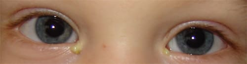
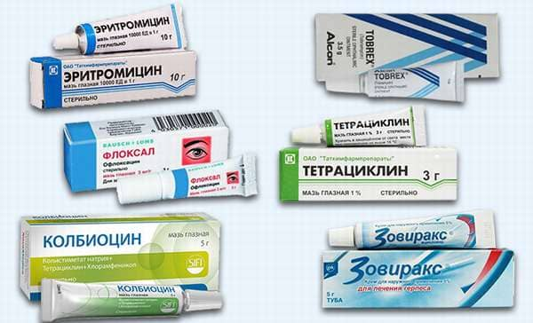

У большинства новорожденных глаза начинают слезиться к трем неделям. Эти слезы должны оттекать в нос через крошечные слезные канальцы во внутренних углах глаз. В первые несколько недель или месяцев вы можете отмечать желтые, липкие выделения из одного или обоих глаз. Обычно они вызываются закупоркой слезного канальца.

При рождении выходящие в носовую полость концы этих канальцев, называемые слезно-носовыми протоками, иногда закрыты тонкой мембраной, которая обычно разрывается сразу после рождения, обеспечивая нормальный отток слез. Часто случается, что эта мембрана разрывается не полностью, поэтому слезно-носовые протоки остаются закупоренными и слезы скапливаются в одном или обоих глазах. В жидкости, не оттекающей должным образом, размножаются болезнетворные микроорганизмы. В этом случае выделения из глаз вашего ребенка будут неизменно желтыми, что указывает на воспаление в области перекрытых слезных протоков.
Вот как открыть слезно-носовой проток. Осторожно массируйте слезный каналец, расположенный под крошечным «бугорком» во внутреннем углу глаза, около носа. Массируйте в направлении вниз и внутрь (к носу) примерно шесть раз. Выполняйте этот массаж так часто, как будете вспоминать о нем – например, перед каждой сменой подгузника, предварительно вымыв руки. При массаже слезного канальца возникает давление на жидкость, скопившуюся в протоке, и со временем закупоривающая его мембрана выскакивает и проток открывается.
Если вы по-прежнему замечаете, что один или оба глаза постоянно слезятся или из них вытекают желтые выделения, во время профилактического осмотра ребенка попросите своего врача проинструктировать вас, как следует проводить массаж слезных канальцев. Если по-прежнему имеются желтые выделения, ваш врач может прописать мазь с антибиотиками или капли для лечения этого воспаления. Матери часто говорят, что, если промыть глаза грудным молоком (которое содержит антимикробные компоненты), выделения исчезают.

Закупорка слезно-носовых протоков может время от времени повторяться, но обычно к шести месяцам они остаются открытыми. Иногда это консервативное лечение не дает результатов, и в возрасте между шестью и девятью месяцами возникает необходимость, чтобы окулист открыл эти протоки, введя в них тончайшую проволоку. Обычно эта не требующая много времени процедура проводится прямо в кабинете, но может потребоваться амбулаторная операция под общей анестезией. Нагноение глаз в первые несколько месяцев практически всегда вызывается закупоркой слезно-носовых протоков; у ребенка более старшего возраста выделения из глаз могут быть вызваны воспалением глаз, конъюнктивитом, или чаще могут быть следствием воспаления уха и пазух.
Сразу после рождения вы можете заметить красную полоску на белке одного глаза ребенка или на обоих белках. Не волнуйтесь! Это называется конъюнктивальными кровоизлияниями и вызывается тем, что кровеносные сосуды лопнули во время родов от сжатия. Это не приносит вреда глазам ребенка и исчезает в течение нескольких недель.
Марта, Уильям, Роберт, Джеймс Сирс"Ваш малыш от рождения до двух лет"